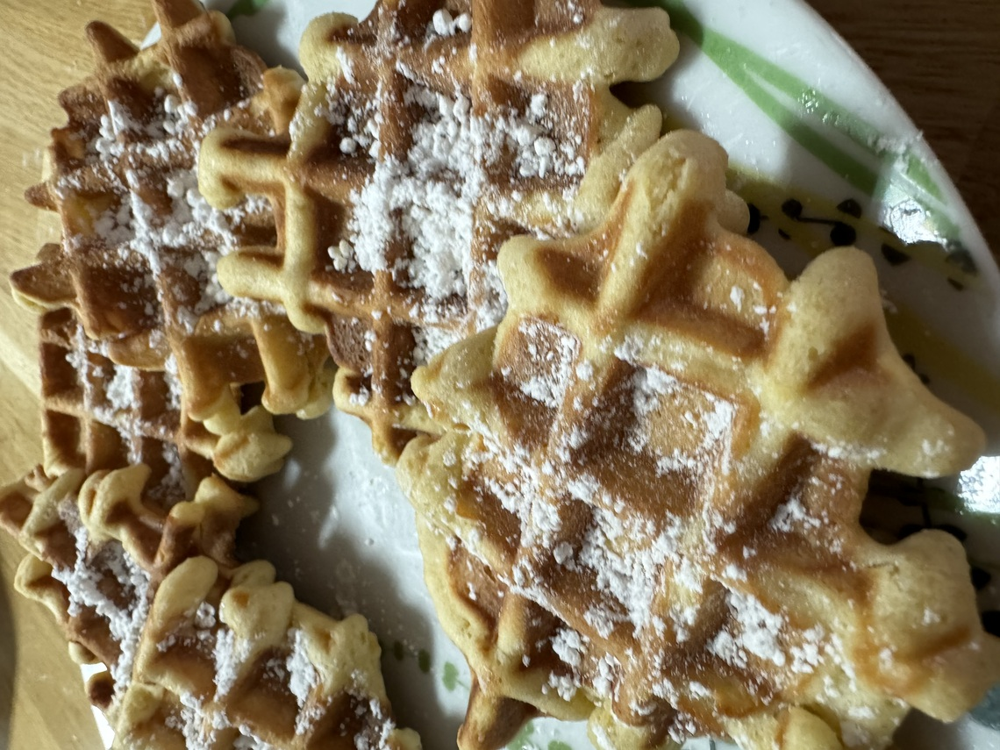

Gaufres liégeoises
Ingredients
×
- 15 g de levure fraîche
- 150 ml de lait
- 400 g de farine
- 150 g de sucre
- 1 sachet de sucre vanillé
- 200 g de beurre mou
- 2 oeufs
- sel

Préparation
Étape 1
Diluer 15 g de levure fraîche dans 150 ml de lait.
Étape 2
Mélanger 400 g de farine, 150 g de sucre, 1 sachet de sucre vanillé, 200 g de beurre mou, 2 oeufs, le lait et du sel.
Étape 3
Laisser reposer 24h.